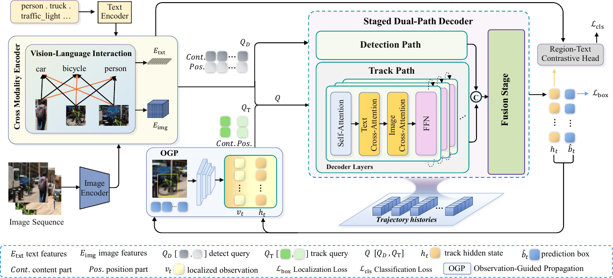

Try it
INGRAIN tracks whatever category words it is given — including categories absent from the training annotations. Pick a clip, open Prompt, and compose the categories to track.
The tracks were pre-computed by INGRAIN with each clip's full word list as its prompt; the page replays them for the words you select.
Abstract
Open-vocabulary multi-object tracking (OV-MOT) aims to localize, recognize, and consistently associate objects beyond a fixed training vocabulary. However, current OV-MOT methods often use pretrained open-vocabulary detectors mainly for frame-level perception, or derive their open-vocabulary correspondence from an external model during tracking, leaving the alignment already acquired in detector pretraining underexploited for trajectory modeling. To address this limitation, we propose INGRAIN, an end-to-end framework that directly integrates object discovery, open-vocabulary classification, and trajectory modeling within the vision–language query space inherited from a pretrained Grounding DINO. Specifically, a staged dual-path decoder first separates open-vocabulary object discovery from trajectory modeling, and then integrates them for joint reasoning. Multi-depth trajectory memory provides long-range historical context throughout track decoding and cross-frame propagation, and observation-guided propagation reconstructs each track query with localized instance evidence from the current observation. Extensive experiments show that INGRAIN establishes a new state of the art for end-to-end OV-MOT on TAO, delivering strong association together with high novel-category classification accuracy.
Method

Staged dual-path decoder
Provides distinct early updates for detect and track queries, followed by joint refinement.
Multi-depth trajectory memory
Supplies layer-aligned historical representations to reduce drift in propagated track queries.
Observation-guided propagation
Reconstructs track queries from instance observations and decoded trajectory representations for the next frame.
Demo Videos
Click a preview to open the full-length 1280×720 video.
Results
Open-vocabulary MOT on TAO
| Validation, Novel | Validation, Base | Test, Novel | Test, Base | |||||||||||||
|---|---|---|---|---|---|---|---|---|---|---|---|---|---|---|---|---|
| Method | TETA | LocA | AssocA | ClsA | TETA | LocA | AssocA | ClsA | TETA | LocA | AssocA | ClsA | TETA | LocA | AssocA | ClsA |
| DeepSORT (ViLD)† | 21.1 | 46.4 | 14.7 | 2.3 | 26.9 | 47.1 | 15.8 | 17.7 | 17.2 | 38.4 | 11.6 | 1.7 | 24.5 | 43.8 | 14.6 | 15.2 |
| TETer†* | 25.7 | 45.9 | 31.1 | 0.2 | 30.3 | 47.4 | 31.6 | 12.1 | 21.7 | 39.1 | 25.9 | 0.0 | 29.2 | 44.0 | 30.4 | 10.7 |
| OVTrack | 27.8 | 48.8 | 33.6 | 1.5 | 35.5 | 49.3 | 36.9 | 20.2 | 24.1 | 41.8 | 28.7 | 1.8 | 32.6 | 45.6 | 35.4 | 16.9 |
| OVTR | 31.4 | 54.4 | 34.5 | 5.4 | 36.6 | 52.2 | 37.6 | 20.1 | 27.1 | 47.1 | 32.1 | 2.1 | 34.5 | 51.1 | 37.5 | 14.9 |
| SLAck | 31.1 | 54.3 | 37.8 | 1.3 | 37.2 | 55.0 | 37.6 | 19.1 | 27.1 | 49.1 | 30.0 | 2.0 | 34.7 | 52.5 | 35.6 | 16.1 |
| INGRAIN (ours) | 38.9 | 61.1 | 38.9 | 16.6 | 41.1 | 61.5 | 39.2 | 22.6 | 37.5 | 59.5 | 37.4 | 15.7 | 38.7 | 60.5 | 38.4 | 17.1 |
Novel and Base are the rare and frequent/common LVIS category splits. †: also trained on TAO; *: trained on base and novel categories.
Closed-set results on TAO val
| Method | TETA | LocA | AssocA | ClsA |
|---|---|---|---|---|
| ByteTrack (GD-T) | 31.0 | 47.4 | 26.4 | 19.1 |
| MASA (GD-B) | 34.9 | 51.8 | 37.6 | 15.4 |
| OVTR | 35.7 | 52.3 | 36.3 | 18.4 |
| SLAck-T | 35.5 | 52.2 | 38.9 | 15.6 |
| INGRAIN (ours) | 40.9 | 61.5 | 39.2 | 21.9 |
GD-T/GD-B: Grounding DINO with Swin-T/Swin-B; SLAck-T: SLAck with Swin-T.